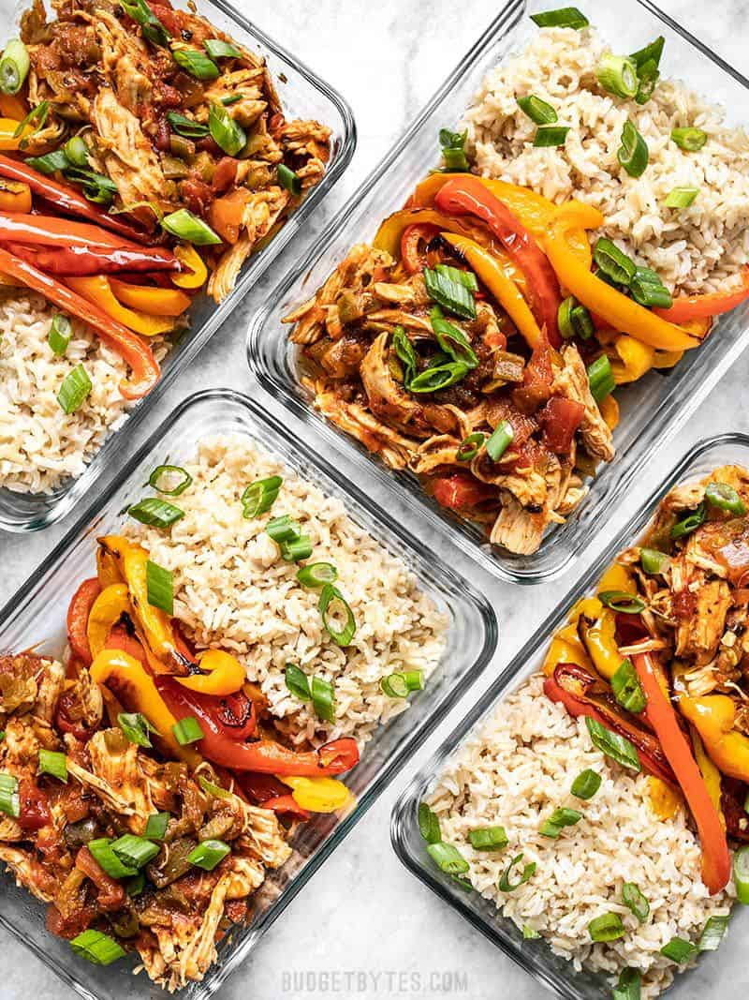

Salsa Chicken Bowl

A delicious and fragrant chicken meal that has some kick to it.
This meal is sure to destroy any cravings you have.
Ingredients
- 1 cup brown rice ($0.60*)
- 1/2 tsp salt ($0.02)
- 1.75 cup water ($0.00)
- 2 boneless, skinless chicken breasts (about 1.3 lbs. total) ($5.62)
- 16 oz. salsa ($1.99)
- 1/2 cup chicken broth ($0.07)
- 1 tsp chili powder** ($0.10)
- 3 bell peppers ($2.99)
- 1 Tbsp oil ($0.04)
- pinch salt ($0.02)
- 2 green onions, sliced ($0.22)
- 4 Tbsp sour cream ($0.11)
Steps
- Preheat the oven to 425ºF. Cook the brown rice according to the package directions. (Add rice, salt, and water to a pot, cover, bring to a boil over high heat, then turn the heat down to low and simmer for 35 minutes.)
- While the rice is cooking, begin the chicken. Add the chicken breasts to a medium sauce pot along with the salsa, chicken broth, and chili powder. Give everything a brief stir.
- Place a lid on the pot and bring it to a boil over high heat. Once the liquid starts boiling, turn the heat down to low and let the chicken simmer over low for 30 minutes. Make sure it's simmering the whole time, adjusting the heat slightly if needed.
- While the rice and chicken are cooking, prepare the bell peppers. Slice the bell peppers into 1/2-wide strips. Place them on a baking sheet and drizzle with cooking oil. Toss the peppers to coat them in oil, then sprinkle with a pinch of salt.
- Roast the peppers in the preheated oven for 20-25 minutes, or until they are browned on the edges, stirring once half way through.
- After the chicken has simmered for 30 minutes, remove it from the salsa mixture and use two forks to shred the meat. Return the shredded chicken to the pot of salsa and stir to combine.
- Once the rice has rested, the chicken has been shredded, and the peppers have finished roasting, it's time to build the bowls.
- Add about 3/4 cup rice to each container, followed by 1/4 of the roasted peppers, and 1/4 of the shredded chicken. Spoon the salsa mixture from the pot over the shredded chicken in the containers. This will act as a sauce to help moisten the entire dish. Top with sliced green onions and a dollop of sour cream and serve immediately or refrigerate for up to 4 days.